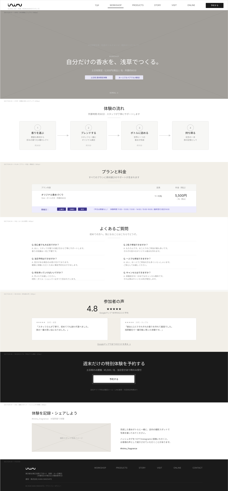
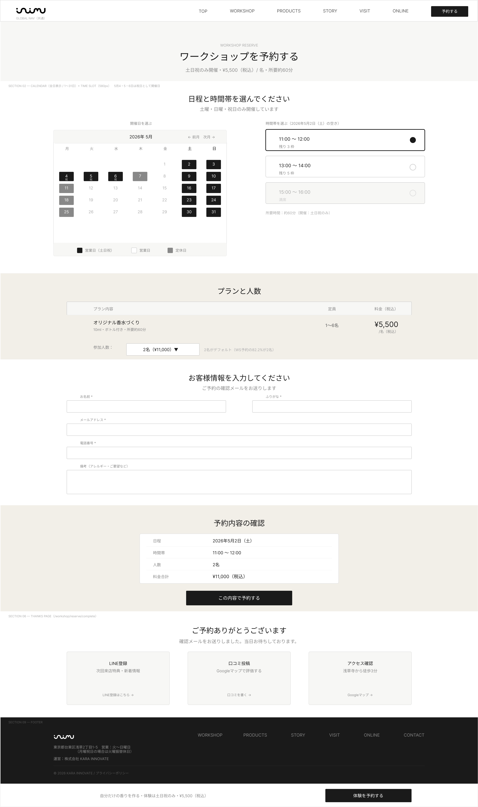
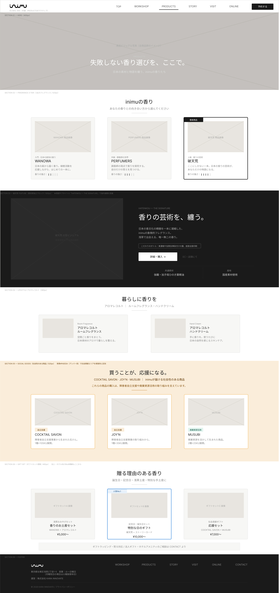
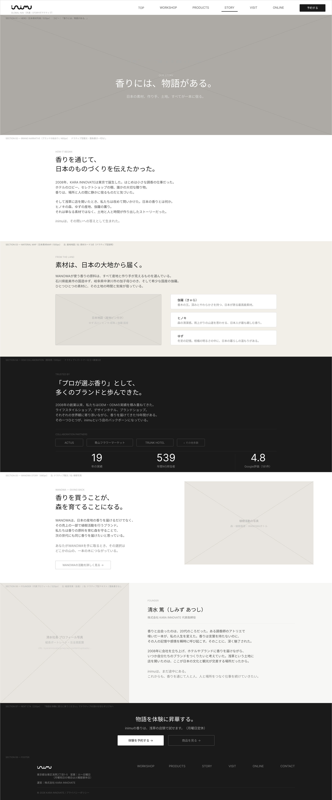
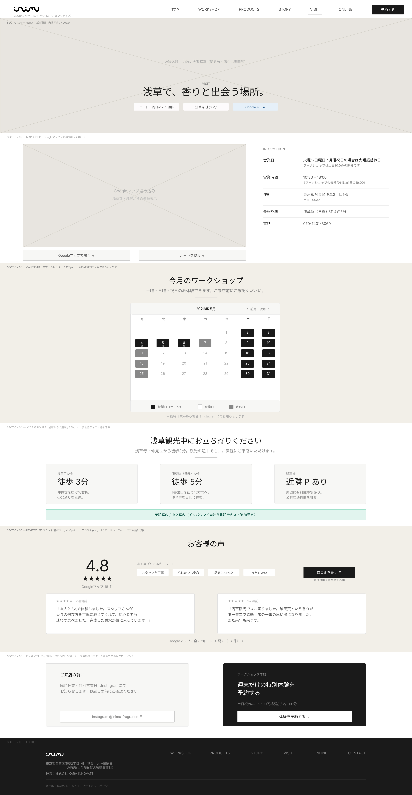
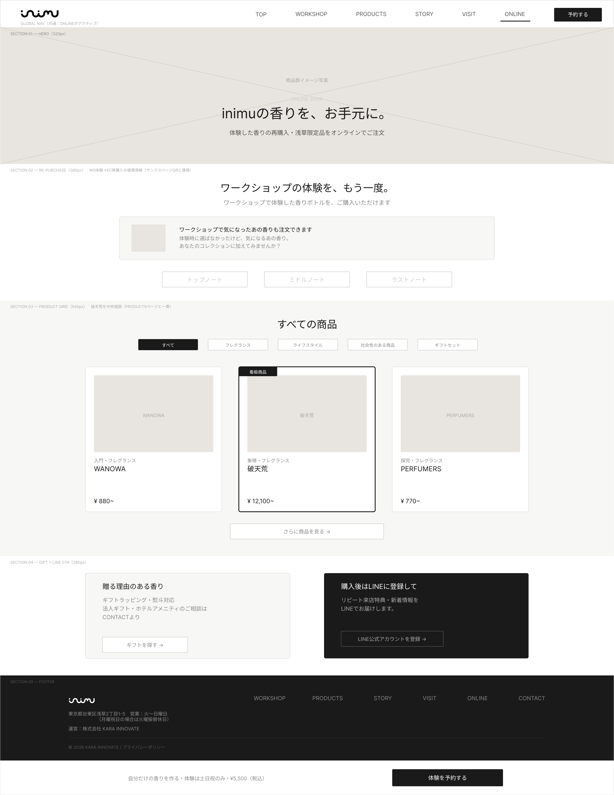
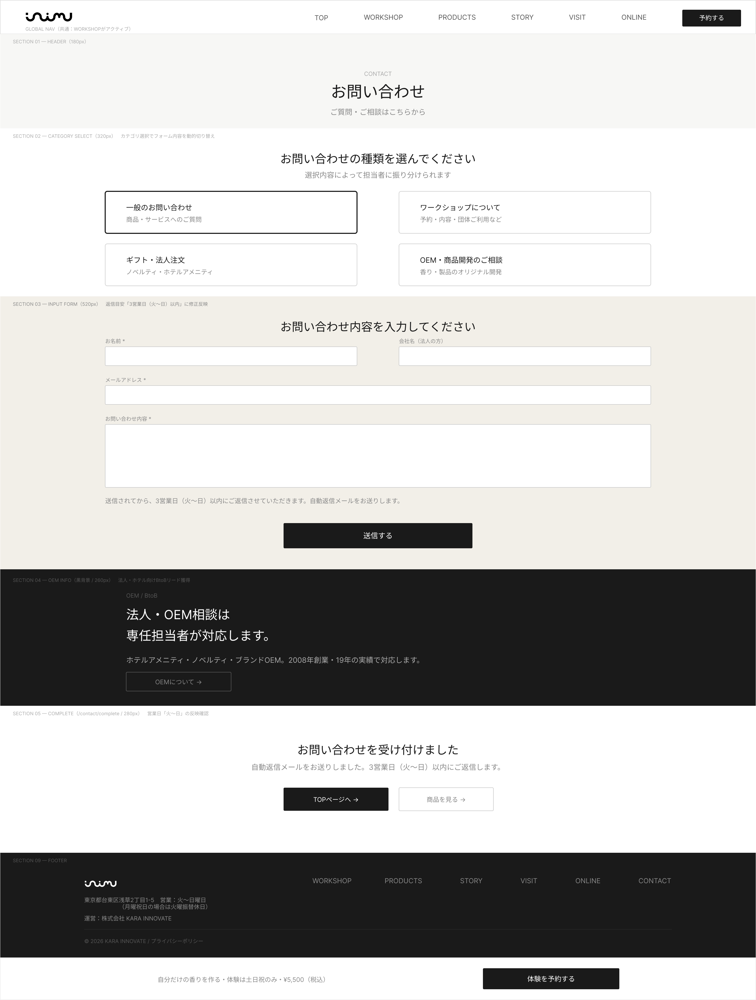

ワイヤーフレーム
ワイヤーフレーム作成方法
トップページ

来店理由を3秒で形成する唯一のファーストビュー。
全画面ヒーロービジュアルで3つの来店目的（お土産／体験／香水）への入口を提示。
| 項目 | 配置理由とユーザーへの効果 |
|---|---|
| ① 全画面ヒーロービジュアル | ファーストビューで世界観と店舗の魅力を直感的に伝え、訪問直後に「ここは何のお店か」を理解しやすくする。ユーザーは短時間で自分に関係のある店だと判断しやすくなる。 |
| ② ブランドキャッチコピー | ブランドの価値や独自性を短い言葉で明確にし、浅草で立ち寄る理由を瞬時に形成しやすくする。ユーザーは他店との違いを早くつかめるため、興味を持ったまま次の情報へ進みやすい。 |
| ③ 来店目的別CTA×3 | お土産、体験、香水という主要ニーズごとに導線を分けることで、ユーザーが自分に合う入口を迷わず選べるようにする。ユーザーは探したい情報へ最短で到達でき、離脱しにくくなる。 |
| ④ 商品3層プレビュー | 取り扱い商品の幅を一目で見せることで、価格感や選択肢を把握しやすくし、比較検討の初期不安を下げる。ユーザーは「自分向けの商品がありそうか」を早く判断でき、検討を続けやすくなる。 |
| ⑤ 信頼実績バッジ | 実績や評価を視覚的に提示し、初回来店前の不安を軽減して安心感を補強する。ユーザーは初めての来店でも心理的ハードルが下がり、予約や訪問の判断をしやすくなる。 |
| ⑥ Instagram最新フィード | 最新の店内雰囲気や商品、体験の様子を見せることで、現地の温度感を伝え、来店後のイメージを具体化しやすくする。ユーザーは写真ベースで体験を想像できるため、「行ってみたい」という気持ちを高めやすい。 |
| ⑦ アクセス・営業日案内 | 行き方や営業情報をすぐ確認できる位置に置くことで、検索の手間を減らし、来店行動への移行を後押しする。ユーザーは不明点をその場で解消でき、来店直前の離脱を防ぎやすくなる。 |
下層ページ
1. WORKSHOP｜ワークショップ体験ページ

配置意図：WS予約の主軸ページとして、自社HP予約への移行を促す核になるよう設計。カップル・友人ペア2名向けのビジュアルとコピーを中心に置き、土日祝のみ運営である点を明記して予約計画を促す。
2. RESERVE｜予約フォームページ

配置意図：じゃらん依存から脱却する自社予約受付の核機能として配置。顧客データ取得・LINE連携・リピート設計の起点となるため、空き枠確認から予約完了までを最短で進められる流れを重視している。
3. PRODUCTS｜商品ページ

配置意図：商品カテゴリナビを起点に、商品カード、商品詳細導線、看板商品の「破天荒」特集、ギフト提案、EC購入導線までを一連で見せる構成。香り選びと購入行動を支援しやすい情報順に並べている。
4. STORY｜ブランドストーリーページ

配置意図：日本素材の大型ビジュアルから入り、ブランドの歴史・想い、日本素材MAP、OEM協業実績、WANOWA植樹活動、トレーサビリティへと信頼形成が積み上がる順で配置。ブランド理解を深めるための読み物構成としている。
5. VISIT｜アクセス・店舗案内ページ

配置意図：来店直前の最終接点として、浅草観光中の動線と土日祝営業という制約を分かりやすく伝える構成。Google Mapの口コミ評価4.8pt・181件の信頼感を前面に出し、来店判断を後押しする。
6. ONLINE｜オンラインショップページ

配置意図：WS体験後のEC再購入と遠方ファン向け購買導線を担うページとして設計。体験後にも戻ってきやすい商品導線を中心に据え、EC成長余地を見込んだ再購入導線を強めている。
7. CONTACT｜お問い合わせページ

配置意図：一般問い合わせ、法人、OEM相談の受け口として、必要な入力を迷わず進められる構成。法人・ホテル向けのBtoBリード獲得にも活用できるよう、相談用途が伝わる導線を意識している。
Webアプリケーション画面
1. 共通レイアウト
┌─────────────────────────────────────────────┐ │ [inimu 管理システム] [ユーザー名▼] [ログアウト] │ ├──────────┬──────────────────────────────────┤ │ │ │ │ ダッシュ │ │ │ ボード │ メインコンテンツエリア │ │ ───── │ │ │ 予約管理 │ │ │ 顧客管理 │ │ │ 問い合わ │ │ │ せ管理 │ │ │ 商品管理 │ │ │ ───── │ │ │ レポート │ │ │ 設定 │ │ │（管理者 │ │ │ のみ） │ │ └──────────┴──────────────────────────────────┘
2. ログイン画面
┌─────────────────────────────────────────────┐ │ │ │ [inimu ロゴ] │ │ 管理システム ログイン │ │ │ │ ┌────────────────────────────────────┐ │ │ │ メールアドレス │ │ │ │ [________________________] │ │ │ │ │ │ │ │ パスワード │ │ │ │ [________________________] │ │ │ │ │ │ │ │ ※エラー時：赤字でメッセージ表示 │ │ │ │ 「メールアドレスまたはパスワードが │ │ │ │ 正しくありません」 │ │ │ │ │ │ │ │ [ ログインする ] │ │ │ └────────────────────────────────────┘ │ │ │ │ © 2024 KARA INNOVATE │ └─────────────────────────────────────────────┘
| 要素 | 内容 |
|---|---|
| ロゴ | inimuロゴ（中央配置） |
| タイトル | 「管理システム ログイン」 |
| 入力フォーム | メールアドレス・パスワード（必須） |
| エラーメッセージ | 認証失敗時・アカウントロック時に赤字で表示 |
| ログインボタン | Primary（黒）ボタン |
| フッター | © KARA INNOVATE |
3. 一覧画面（例：予約一覧 /admin/reservations）
┌─────────────────────────────────────────────┐ │ ヘッダー ユーザー名 │ ├──────────┬──────────────────────────────────┤ │ サイド │ 予約管理 > 予約一覧 │ │ ナビ ├──────────────────────────────────┤ │ │ 予約一覧 [+ 新規登録] │ │ ├──────────────────────────────────┤ │ │ ── 検索・絞り込み ── │ │ │ 日付 [____] ～ [____] │ │ │ ステータス [確定▼] 氏名 [____] │ │ │ [🔍 検索する] [クリア] │ │ ├──────────────────────────────────┤ │ │ 全 XX 件 [CSVダウンロード] │ │ ├──────────────────────────────────┤ │ │ □ 日時↕ 氏名↕ 人数 ステータス 操作 │ │ │ ─────────────────────────────── │ │ │ □ 5/2 11:00 田村沙希 2名 確定 [詳細]│ │ │ □ 5/2 13:00 山田太郎 3名 確定 [詳細]│ │ │ □ 5/3 11:00 佐藤花子 2名 ｷｬﾝｾﾙ[詳細]│ │ │ ─────────────────────────────── │ │ │ ← 1 2 3 … → 10件/page▼ │ └──────────┴──────────────────────────────────┘
| 要素 | 内容 |
|---|---|
| パンくず | 現在地を階層表示 |
| ページタイトル＋新規登録ボタン | 右上に配置 |
| 検索フォーム | 日付範囲・ステータス（プルダウン）・氏名テキスト検索 |
| 検索ボタン・クリアボタン | 検索フォームの右に並列配置 |
| 件数表示＋CSVダウンロード | テーブル上部に配置 |
| テーブル | チェックボックス・各カラムにソート矢印・詳細リンク |
| ページネーション | テーブル下部・表示件数切り替え（10/25/50件）付き |
4. 新規登録画面（例：予約新規登録 /admin/reservations/new）
┌─────────────────────────────────────────────┐ │ ヘッダー │ ├──────────┬──────────────────────────────────┤ │ サイド │ 予約管理 > 予約一覧 > 新規登録 │ │ ナビ ├──────────────────────────────────┤ │ │ 予約新規登録（当日飛び込み対応） │ │ ├──────────────────────────────────┤ │ │ ── 予約情報 ── │ │ │ 予約日 [カレンダー選択] *必須 │ │ │ 時間帯 [11:00〜12:00 ▼] *必須 │ │ │ ○残り3枠 ○残り5枠 ×満席│ │ │ 参加人数 [2名 ▼] *必須 │ │ │ 料金 ¥11,000（自動計算） │ │ ├──────────────────────────────────┤ │ │ ── お客様情報 ── │ │ │ 氏名 [__________] *必須 │ │ │ ふりがな [__________] *必須 │ │ │ メール [__________] *必須 │ │ │ 電話番号 [__________] *必須 │ │ │ 備考 [__________________] │ │ ├──────────────────────────────────┤ │ │ 確認メール送信 ● 送信する ○ 送らない │ │ ├──────────────────────────────────┤ │ │ [キャンセル] [予約を登録する] │ └──────────┴──────────────────────────────────┘
5. 詳細画面（例：予約詳細 /admin/reservations/{id}）
┌─────────────────────────────────────────────┐ │ ヘッダー │ ├──────────┬──────────────────────────────────┤ │ サイド │ 予約管理 > 予約一覧 > 予約詳細 │ │ ナビ ├──────────────────────────────────┤ │ │ 予約詳細 #00123 [編集] [一覧に戻る]│ │ ├──────────────────────────────────┤ │ │ ステータス [確定] ← バッジ表示 │ │ ├──────────────────────────────────┤ │ │ ── 予約情報 ── │ │ │ 予約日時 2026年5月2日（土）11:00 │ │ │ 参加人数 2名 │ │ │ 料金 ¥11,000（税込） │ │ │ 受付経路 自社サイト │ │ │ 登録日時 2026年4月28日 14:32 │ │ ├──────────────────────────────────┤ │ │ ── お客様情報 ── │ │ │ 氏名 田村 沙希 │ │ │ ふりがな たむら さき │ │ │ メール example@email.com │ │ │ 電話番号 090-0000-0000 │ │ │ 備考 アレルギーなし │ │ ├──────────────────────────────────┤ │ │ ── スタッフメモ ── │ │ │ [メモを入力...____________] │ │ │ [メモを保存] │ │ ├──────────────────────────────────┤ │ │ ── ステータス変更 ── │ │ │ [入場済みにする] [キャンセルする] │ └──────────┴──────────────────────────────────┘
6. 編集画面（例：予約編集 /admin/reservations/{id}）
┌─────────────────────────────────────────────┐ │ ヘッダー │ ├──────────┬──────────────────────────────────┤ │ サイド │ 予約管理 > 予約一覧 > 詳細 > 編集 │ │ ナビ ├──────────────────────────────────┤ │ │ 予約編集 #00123 │ │ ├──────────────────────────────────┤ │ │ ⚠ 変更すると確認メールを再送します │ │ ├──────────────────────────────────┤ │ │ ── 予約情報 ── │ │ │ 予約日 [2026/05/02] *必須 │ │ │ 時間帯 [11:00〜12:00 ▼] *必須 │ │ │ 参加人数 [2名 ▼] *必須 │ │ │ 料金 ¥11,000（自動計算） │ │ │ ステータス [確定 ▼] │ │ ├──────────────────────────────────┤ │ │ ── お客様情報 ── │ │ │ 氏名 [田村 沙希___] *必須 │ │ │ ふりがな [たむら さき_] *必須 │ │ │ メール [example@___] *必須 │ │ │ 電話番号 [090-0000___] *必須 │ │ │ 備考 [アレルギーなし_________]│ │ ├──────────────────────────────────┤ │ │ 確認メール再送 ● する ○ しない │ │ ├──────────────────────────────────┤ │ │ [詳細に戻る] [変更を保存する] │ └──────────┴──────────────────────────────────┘
| 要素 | 内容 |
|---|---|
| パンくず | 詳細ページからの階層を表示 |
| 注意メッセージ | 変更時の確認メール再送について明記 |
| 予約情報ブロック | 日時・人数・料金自動計算・ステータス変更プルダウン |
| お客様情報ブロック | 全項目を編集可能フォームで表示（現在値を初期値に） |
| 確認メール再送オプション | 変更を通知するか選択 |
| ボタン | 詳細に戻る（左・Ghost）・変更を保存する（右・Primary） |
| バリデーション | 必須項目・形式エラーをインライン表示 |
各画面共通の設計ルール
| ルール | 内容 |
|---|---|
| 必須マーク | * をラベル右に赤字で表示 |
| バリデーション | フォーカスアウト時にインライン表示（送信前確認） |
| 削除操作 | 詳細画面からのみ実行可。確認モーダルを必ず挟む |
| ステータスバッジ色 | 確定：緑 / キャンセル：赤 / 入場済み：グレー / 未対応：オレンジ |
| ボタン配置 | キャンセル系は左・保存/登録系は右（Primary）で統一 |
| 権限制御 | 売上レポート・設定系メニューはスタッフ権限では非表示 |
スマートフォン版
TOP｜トップページ（スマートフォン版）